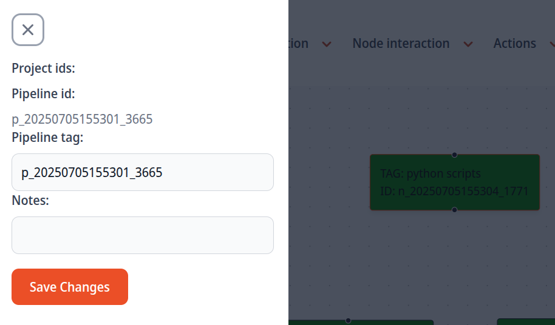

Basic Interaction
Basic user interaction
In this section, you will learn the fundamentals of interacting with the FusionPipe frontend and how to effectively manage your data processing workflows.
Follow these simple description:
Create a pipeline
First, click on Pipeline Interaction on the panel options shown in the image above and then on Create Pipeline.
The pipeline has unique identifier, pipeline_id, and a pipeline_tag. The pipeline_id, differently then the pipeline_tag, cannot be modified by the user.
You can select the pipeline per ids (List ids) or tags (List tags) from the dropdown menu in Pipeline Interaction.
Change pipeline name and add notes
From the Pipeline Interaction option, select Open selected pipeline panel to customize the pipeline tag with a meaningful name that helps you identify the specific purpose of your pipeline. This custom tag will allow you to easily search and access your pipeline later.
Additionally, you can add detailed notes to document the pipeline's objectives, methodology, or any other relevant information for future reference.

Create a node
To create your first node, click on Node Interaction and then select Create node. Each node, like a pipeline, is assigned a unique identifier (node_id) to ensure its uniqueness within a pipeline. A specific node_id can appear only once in a given pipeline, but the same node can be referenced in multiple pipelines, allowing for shared use and consistency. See Develop a Node for more information.
A node is represented as a folder containing three subfolders:
data: stores the output generated by the node.code: contains your scripts and code files.reports: used for saving plots or reports produced during your analysis.
This structure helps organize your workflow by keeping data, code, and results neatly separated within each node.
If you want to change the tag and add notes to your node, you can select the node and open the Node interaction options and select Open selected node panel.
Navigate to your node folder with your favourite IDE
To get the folder path containing the node, right click on the the node and Copy Folder Path. This will copy in the clipboard the absolute path to the folder containing the node information.
You can now use your favourite IDE to modify the code in your node.
Connect nodes
Each node exposes two connection points: an input port and an output port. These ports enable inter-node connections within your pipeline. When you create a new node and connect the output port of your first node to the input port of the second node, FusionPipe automatically establishes a parent-child relationship in its database. This relationship allows child nodes to access the output data generated by their parent nodes, creating a seamless data flow through your pipeline.
To automatically organize the nodes in your pipeline workspace, access the Layout menu and click Auto reshape. This feature arranges all nodes in an optimal layout for better visualization.
Delete nodes and connections
To delete a node, click on it to ensure it is selected (the edge color will change to indicate selection). Then go to Node interaction (dropdown menu) and choose Delete selected nodes option.
You can also delete multiple nodes at once by holding Shift and dragging with the left mouse button to select them, then using the same delete option.
To clear only a node’s outputs while preserving its code, select the node and choose Delete output selected nodes. This action will empty the node’s data folder, but the node itself and its code folder will remain unchanged.
It is possible to delete connections between node: just select an edge which is connecting an output port and an input port and from Node interaction click on Delete selected edge.
Node status
A node can be in one of the following five states:
Ready: The node is ready to run; its output folder is empty.
Completed: The node has run successfully and produced output.
Running: The node is currently being executed.
Failed: The node execution failed. Check the log.txt file in the node folder for debugging information.
Stale-data: The node’s output may be inconsistent with its code or inputs. This indicates the pipeline should be rerun to update results. See Stale-data section below for more information.
Actions
Select a node and run: to run a node, select it and open the Actions panel. Then click on Run selected node. This execution will work only if the node has no parents and its data folder is empty, or all the parents of the node are in the status completed. Now, you can go on Layout and select Refresh pipeline to see your node entering the running state and finally the completed state.
Run full pipeline: from the Actions panel, select Run full pipeline to execute all nodes in your pipeline sequentially. FusionPipe will automatically determine the correct order based on node dependencies, ensuring that each node runs only after its parent nodes have completed. This feature streamlines the workflow, allowing you to process the entire pipeline with a single action.
Run pipelione up to a node: to execute your pipeline sequentially up to a node, select a node and from the Actions panel, select Run pipeline up to selected node.
Kill running node: to stop the process of a node that is running, select that node, open Actions panel and click on Kill run selected node. That node will switch to failed sate.
Node in status stale-data
The status stale-data is a special status which allows the user to flag the the output of a node are no longer consistent with the code of the node or the its inputs, and the pipeline needs to be rerun
A node can transition from completed or ready to stale-data state. This can happen in the following situations:
- The user has changed the code in a node. Then it can flag the node to be in stale-data state. This way the pipeline needs to re-run the node and all its children.
- A node was in completed state, but then the user changed the inputs of the node.
- If there are multiple connected nodes, which are in completed state and you delete the output of one of these nodes. In this case, all the children nodes will switch to stale-data state.
- If you have multiple nodes, connected, which are in completed state and you delete the edge (connection) of a node. All the children of this edge enters the state stale-data state.
- When you duplicate a node, with data, the duplicated node by default will be in the stale-data state.
Tip
Sometimes, FusionPipe may automatically set a node to the stale-data status after one of the previous condition, when the node was previously in the status completed. However, there may be cases where you are confident that the node’s output remains valid and does not require rerunning. In such situations, you can manually set the node back to completed from the Node Interaction panel. This is especially helpful for nodes with outputs that took significant time to generate.